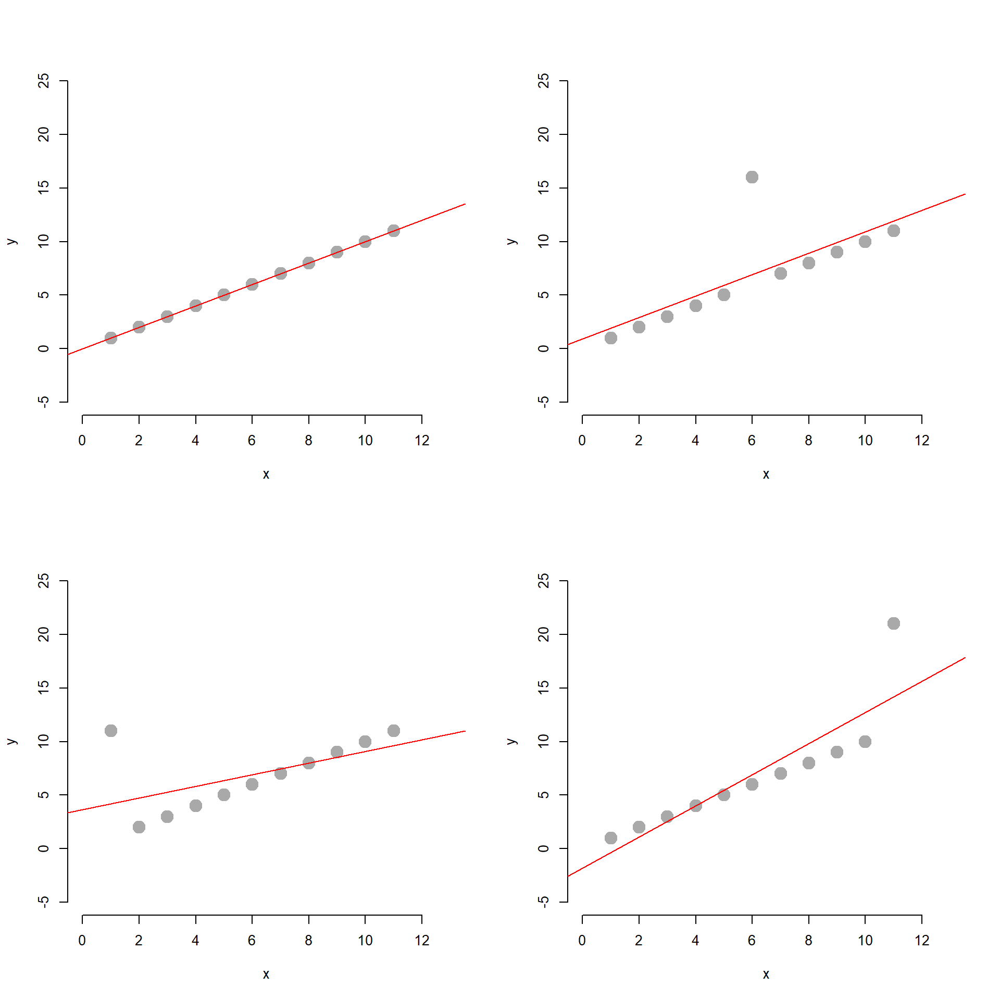
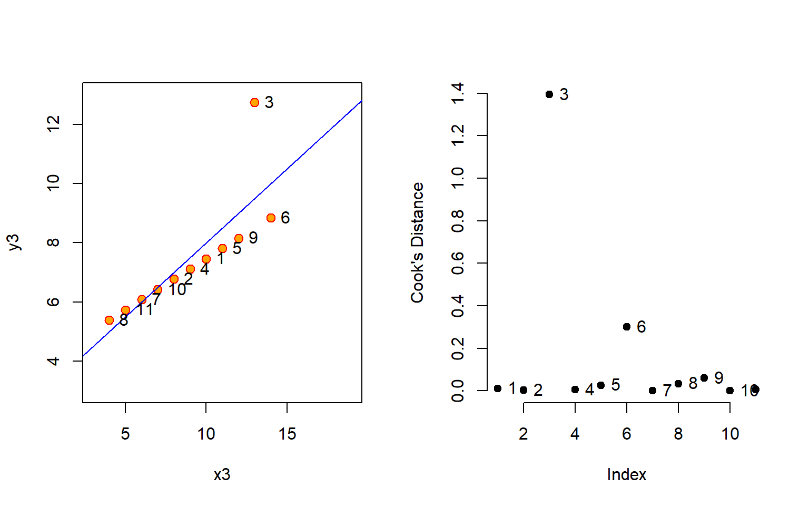
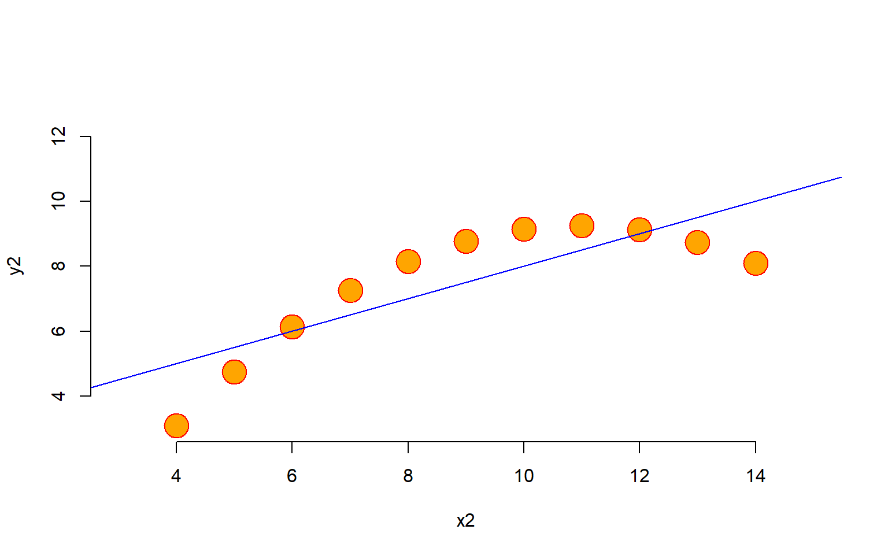
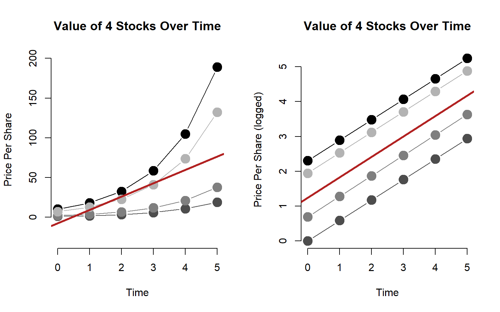
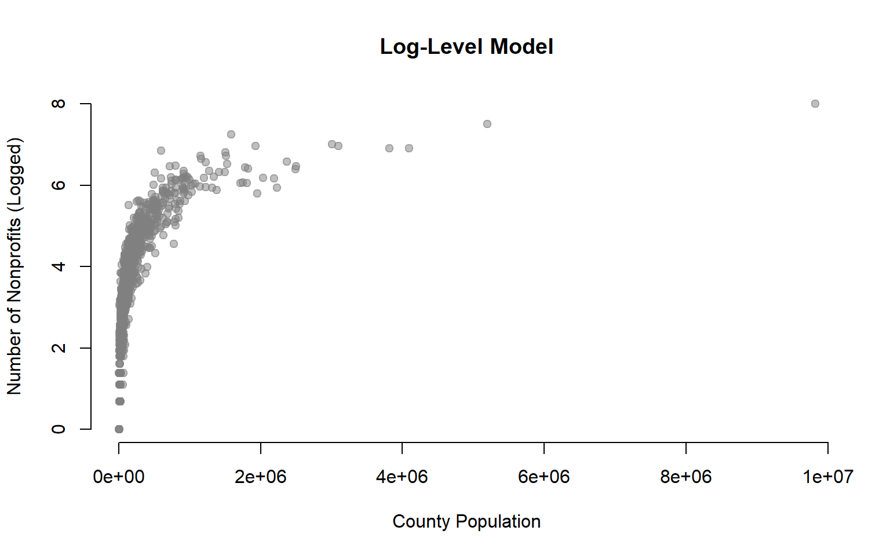

library( stargazer )
library( xtable )
library( dplyr )
library( pander )SPECIFICATION BIAS
Bias that results from a mis-specified model, which can be:
- A model with unmitigated outlier effects
- Sensitivity analysis can be performed by dropping outliers
- Logged models are useful to address data skew
- A model that is fit using the wrong functional form
- Linear specification when relationship is non-linear
Diagnosing Model Fit Problems
- Type I and Type II Errors
- Measurement Error
OUTLIERS
Anscombe’s Quartet Data
data( anscombe )
m1 <- lm( y1 ~ x1, data=anscombe )
m2 <- lm( y2 ~ x2, data=anscombe )
m3 <- lm( y3 ~ x3, data=anscombe )
m4 <- lm( y4 ~ x4, data=anscombe )
par(mfrow = c(2, 2), mar = 0.1+c(4,4,1,1), oma = c(0, 0, 2, 0))
plot( y1 ~ x1, data=anscombe,
col = "red", pch = 21, bg = "orange", cex = 1.2,
xlim = c(3, 19), ylim = c(3, 13))
abline( m1, col = "blue")
plot( y2 ~ x2, data=anscombe,
col = "red", pch = 21, bg = "orange", cex = 1.2,
xlim = c(3, 19), ylim = c(3, 13))
abline( m2, col = "blue")
plot( y3 ~ x3, data=anscombe,
col = "red", pch = 21, bg = "orange", cex = 1.2,
xlim = c(3, 19), ylim = c(3, 13))
abline( m3, col = "blue")
plot( y4 ~ x4, data=anscombe,
col = "red", pch = 21, bg = "orange", cex = 1.2,
xlim = c(3, 19), ylim = c(3, 13))
abline( m4, col = "blue")
mtext("Anscombe's 4 Regression data sets", outer = TRUE, cex = 1.5)
# {r, results='asis'}
stargazer( m1, m2, m3, m4, type="html", digits=2,
omit.stat = c("f","ser","rsq") )| Dependent variable: | ||||
| y1 | y2 | y3 | y4 | |
| (1) | (2) | (3) | (4) | |
| x1 | 0.50*** | |||
| (0.12) | ||||
| x2 | 0.50*** | |||
| (0.12) | ||||
| x3 | 0.50*** | |||
| (0.12) | ||||
| x4 | 0.50*** | |||
| (0.12) | ||||
| Constant | 3.00** | 3.00** | 3.00** | 3.00** |
| (1.12) | (1.13) | (1.12) | (1.12) | |
| Observations | 11 | 11 | 11 | 11 |
| Adjusted R2 | 0.63 | 0.63 | 0.63 | 0.63 |
| Note: | p<0.1; p<0.05; p<0.01 | |||
Residual Analysis
The first step in outlier analysis is finding points that are the furthest away from the regression line. We can simply look at the residuals.
plot( m3$residuals, type="h", main="Residual Analysis", bty="n", ylab="Y - Yhat" )
points( m3$residuals, pch=19 )
text( 1:11, m3$residuals, 1:11, pos=4, cex=0.8 )
abline( h=0, col="gray")The problem with this approach is that not all outliers impact the regression in the same way. Outliers near the mean of X and Y will tug the regression line up or down slightly, so they impact the intercept only. Outliers near the lower and upper range of X will tilt the regression line, impacting both the slope and the intercept.
par( mfrow=c(2,2))
x <- 1:11
y <- 1:11
mm1 <- lm( y ~ x )
plot( x, y, bty="n", pch=19, col="darkgray", cex=2, ylim=c(-5,25), xlim=c(0,13) )
abline( mm1, col="red" )
y[6] <- y[6]+10
mm2 <- lm( y ~ x )
plot( x, y, bty="n", pch=19, col="darkgray", cex=2, ylim=c(-5,25), xlim=c(0,13) )
abline( mm2, col="red" )
y <- 1:11
y[1] <- y[1] + 10
mm3 <- lm( y ~ x )
plot( x, y, bty="n", pch=19, col="darkgray", cex=2, ylim=c(-5,25), xlim=c(0,13) )
abline( mm3, col="red" )
y <- 1:11
y[11] <- y[11] + 10
mm4 <- lm( y ~ x )
plot( x, y, bty="n", pch=19, col="darkgray", cex=2, ylim=c(-5,25), xlim=c(0,13) )
abline( mm4, col="red" )
stargazer( mm1, mm2, mm3, mm4, type="html", digits=2,
omit.stat = c("f","ser","rsq") )| Dependent variable: | ||||
| y | ||||
| (1) | (2) | (3) | (4) | |
| x | 1.00*** | 1.00*** | 0.55* | 1.45*** |
| (0.00) | (0.30) | (0.26) | (0.26) | |
| Constant | 0.00*** | 0.91 | 3.64* | -1.82 |
| (0.00) | (2.06) | (1.78) | (1.78) | |
| Observations | 11 | 11 | 11 | 11 |
| Adjusted R2 | 1.00 | 0.50 | 0.25 | 0.75 |
| Note: | p<0.1; p<0.05; p<0.01 | |||
Cook’s Distance
Let’s focus on one common measure one used to identify outliers that are having a large impact on our regression model. Cook’s distance focuses not on distance from the regression line, but instead is a measure of how much leverage each point will have on the slope of the model.
cooks.distance( m3 ) %>% pander| 1 | 2 | 3 | 4 | 5 | 6 | 7 | 8 |
|---|---|---|---|---|---|---|---|
| 0.01176 | 0.002141 | 1.393 | 0.005473 | 0.02598 | 0.3006 | 0.0005176 | 0.03382 |
| 9 | 10 | 11 |
|---|---|---|
| 0.05954 | 0.0003546 | 0.006948 |
par( mfrow=c(1,2) )
plot( y3 ~ x3, data=anscombe,
col = "red", pch = 21, bg = "orange", cex = 1.2,
xlim = c(3, 19), ylim = c(3, 13))
abline( m3, col = "blue")
text( anscombe$x3, anscombe$y3, 1:11, pos=4 )
plot( cooks.distance( m3 ), pch=19, bty="n", ylab="Cook's Distance" )
text( 1:11, cooks.distance( m3 ), 1:11, pos=4 )
Dealing with outliers can be tricky because once you start changing your data you are going down a slippery slope toward manufacturing results. In the case that the outlier is a data entry error you can fix it or eliminate it without hesitation. But if the data point is accurate and it has a large impact on your outcome then you need to take care to explain and justify your actions. If you delete outliers then report results before and after you have altered the data for the sake of transparency.
There are several rules of thumb on how to use Cook’s distance to identify outliers:
- A general rule of thumb is that observations with a Cook’s D of more than 3 times the mean distance is a possible outlier.
- An alternative interpretation is to investigate any point over 4/n, where n is the number of observations.
- Other authors suggest that any “large” Di should be investigated. How large is “too large”? The consensus seems to be that a Di value of more that 1 indicates an influential value, but you may want to look at values above 0.5.
- An alternative (but slightly more technical) way to interpret Di is to find the potential outlier’s percentile value using the F-distribution. A percentile of over 50 indicates a highly influential point.
par( mfrow=c(1,2) )
plot( y3 ~ x3, data=anscombe, main="Original Data",
col = "red", pch = 21, bg = "orange", cex = 1.2,
xlim = c(3, 15), ylim = c(3, 13))
abline( m3, col = "blue")
anscombe$x3[3] <- NA
anscombe$y3[3] <- NA
m3.2 <- lm( y3 ~ x3, data=anscombe )
plot( y3 ~ x3, data=anscombe, main="After Outlier Removal",
col = "red", pch = 21, bg = "orange", cex = 1.2,
xlim = c(3, 15), ylim = c(3, 13))
abline( m3.2, col = "blue")stargazer( m3, m3.2, type="html", digits=2,
omit.stat = c("ser") )| Dependent variable: | ||
| y3 | ||
| (1) | (2) | |
| x3 | 0.50*** | 0.35*** |
| (0.12) | (0.0003) | |
| Constant | 3.00** | 4.01*** |
| (1.12) | (0.003) | |
| Observations | 11 | 10 |
| R2 | 0.67 | 1.00 |
| Adjusted R2 | 0.63 | 1.00 |
| F Statistic | 17.97*** (df = 1; 9) | 1,160,688.00*** (df = 1; 8) |
| Note: | p<0.1; p<0.05; p<0.01 | |
Logged Models
The last way to address outliers is to used a logged model. These include log-linear models (Y is logged, X is levels), linear-log model (Y is levels, X is logged), or log-log models (both X and Y are logged).
Logging data changes measures from levels (actual numeric values) to something similar to growth rates. This transformation has the biggest impact on large numbers, turning highly-skewed distributions into more reasonable relationships.
# dput( data.frame( FIPS=dat$fips, MSA=dat$MSAName.x, POP=dat$TotalPop.10, NPOs=dat$num.npos.x ) )
# Nonprofit vs. Population Data
npos <- structure(list(FIPS = c(1001L, 1003L, 1009L, 1015L, 1017L, 1033L,
1045L, 1051L, 1055L, 1067L, 1069L, 1073L, 1077L, 1079L, 1081L,
1083L, 1089L, 1095L, 1097L, 1101L, 1103L, 1113L, 1115L, 1117L,
1125L, 2020L, 4005L, 4007L, 4013L, 4015L, 4019L, 4021L, 4025L,
4027L, 5007L, 5031L, 5033L, 5035L, 5045L, 5069L, 5085L, 5091L,
5119L, 5125L, 5131L, 5141L, 5143L, 6001L, 6005L, 6007L, 6013L,
6017L, 6019L, 6029L, 6035L, 6037L, 6039L, 6041L, 6047L, 6053L,
6055L, 6057L, 6059L, 6061L, 6065L, 6067L, 6071L, 6073L, 6075L,
6077L, 6079L, 6081L, 6083L, 6085L, 6087L, 6089L, 6095L, 6097L,
6099L, 6101L, 6107L, 6111L, 6113L, 6115L, 8001L, 8005L, 8013L,
8031L, 8035L, 8041L, 8059L, 8069L, 8077L, 8101L, 8123L, 9001L,
9003L, 9005L, 9007L, 9009L, 9011L, 9013L, 9015L, 10001L, 10003L,
11001L, 12001L, 12005L, 12009L, 12011L, 12015L, 12017L, 12019L,
12021L, 12031L, 12033L, 12035L, 12039L, 12053L, 12057L, 12061L,
12069L, 12071L, 12073L, 12081L, 12083L, 12085L, 12086L, 12089L,
12091L, 12093L, 12095L, 12097L, 12099L, 12101L, 12103L, 12105L,
12109L, 12111L, 12113L, 12115L, 12117L, 12119L, 12127L, 12131L,
13013L, 13015L, 13021L, 13029L, 13045L, 13047L, 13051L, 13053L,
13057L, 13059L, 13063L, 13067L, 13073L, 13077L, 13083L, 13089L,
13095L, 13097L, 13103L, 13113L, 13117L, 13121L, 13135L, 13145L,
13151L, 13153L, 13169L, 13177L, 13179L, 13189L, 13195L, 13215L,
13217L, 13219L, 13223L, 13225L, 13227L, 13245L, 13247L, 13255L,
13289L, 13295L, 13297L, 15003L, 16001L, 16005L, 16027L, 17007L,
17019L, 17027L, 17031L, 17037L, 17043L, 17063L, 17073L, 17083L,
17089L, 17091L, 17093L, 17097L, 17111L, 17113L, 17115L, 17117L,
17119L, 17129L, 17133L, 17141L, 17143L, 17161L, 17163L, 17167L,
17179L, 17197L, 17201L, 17203L, 18001L, 18003L, 18011L, 18019L,
18021L, 18023L, 18029L, 18033L, 18035L, 18039L, 18043L, 18057L,
18059L, 18061L, 18063L, 18067L, 18069L, 18081L, 18089L, 18095L,
18097L, 18105L, 18109L, 18115L, 18119L, 18127L, 18129L, 18133L,
18141L, 18143L, 18145L, 18157L, 18159L, 18163L, 18165L, 18167L,
18173L, 18179L, 18183L, 19013L, 19049L, 19061L, 19103L, 19113L,
19153L, 19155L, 19163L, 19165L, 19181L, 19193L, 20015L, 20045L,
20079L, 20091L, 20103L, 20121L, 20173L, 20177L, 20191L, 20209L,
21015L, 21017L, 21019L, 21029L, 21037L, 21043L, 21047L, 21049L,
21059L, 21067L, 21077L, 21081L, 21089L, 21101L, 21111L, 21113L,
21117L, 21151L, 21185L, 21191L, 21209L, 21239L, 22001L, 22005L,
22015L, 22017L, 22019L, 22033L, 22051L, 22055L, 22057L, 22063L,
22071L, 22073L, 22075L, 22079L, 22087L, 22089L, 22093L, 22095L,
22097L, 22099L, 22103L, 22109L, 22119L, 22121L, 23001L, 23005L,
23019L, 23027L, 23031L, 24001L, 24003L, 24005L, 24009L, 24013L,
24015L, 24017L, 24021L, 24025L, 24027L, 24029L, 24031L, 24033L,
24035L, 24043L, 24510L, 25001L, 25003L, 25005L, 25009L, 25011L,
25013L, 25015L, 25017L, 25021L, 25023L, 25025L, 25027L, 26005L,
26017L, 26021L, 26025L, 26037L, 26045L, 26049L, 26065L, 26075L,
26077L, 26081L, 26087L, 26091L, 26093L, 26099L, 26111L, 26115L,
26121L, 26125L, 26139L, 26145L, 26147L, 26159L, 26161L, 26163L,
27003L, 27009L, 27019L, 27025L, 27027L, 27037L, 27053L, 27055L,
27059L, 27087L, 27109L, 27119L, 27123L, 27137L, 27139L, 27141L,
27145L, 27163L, 27171L, 28033L, 28035L, 28045L, 28047L, 28049L,
28059L, 28073L, 28089L, 28121L, 29003L, 29011L, 29019L, 29021L,
29037L, 29043L, 29047L, 29049L, 29059L, 29071L, 29077L, 29083L,
29095L, 29097L, 29099L, 29107L, 29109L, 29113L, 29145L, 29165L,
29177L, 29183L, 29186L, 29189L, 29219L, 29225L, 29510L, 30013L,
30063L, 30111L, 31025L, 31043L, 31055L, 31109L, 31153L, 31177L,
32003L, 32023L, 32031L, 33009L, 33011L, 33013L, 33015L, 33017L,
34001L, 34003L, 34005L, 34007L, 34009L, 34011L, 34013L, 34015L,
34017L, 34019L, 34021L, 34023L, 34025L, 34027L, 34029L, 34031L,
34033L, 34035L, 34037L, 34039L, 34041L, 35001L, 35013L, 35028L,
35043L, 35049L, 35061L, 36001L, 36005L, 36007L, 36011L, 36013L,
36015L, 36027L, 36029L, 36037L, 36043L, 36047L, 36051L, 36053L,
36055L, 36057L, 36059L, 36061L, 36063L, 36065L, 36067L, 36069L,
36071L, 36073L, 36075L, 36079L, 36081L, 36083L, 36085L, 36087L,
36091L, 36093L, 36095L, 36103L, 36107L, 36113L, 36115L, 36117L,
36119L, 37001L, 37003L, 37019L, 37021L, 37023L, 37025L, 37027L,
37035L, 37037L, 37051L, 37053L, 37057L, 37059L, 37063L, 37065L,
37067L, 37069L, 37071L, 37081L, 37101L, 37109L, 37115L, 37119L,
37127L, 37129L, 37133L, 37135L, 37147L, 37151L, 37159L, 37163L,
37169L, 37179L, 37183L, 37191L, 37197L, 38015L, 38017L, 38035L,
38059L, 39003L, 39007L, 39011L, 39013L, 39015L, 39017L, 39019L,
39023L, 39025L, 39029L, 39033L, 39035L, 39041L, 39045L, 39049L,
39051L, 39055L, 39057L, 39061L, 39077L, 39081L, 39085L, 39087L,
39089L, 39093L, 39095L, 39097L, 39099L, 39103L, 39109L, 39113L,
39129L, 39133L, 39139L, 39151L, 39153L, 39155L, 39165L, 39167L,
39173L, 40017L, 40027L, 40031L, 40037L, 40047L, 40073L, 40083L,
40087L, 40109L, 40113L, 40125L, 40131L, 40135L, 40143L, 40145L,
41003L, 41005L, 41009L, 41029L, 41039L, 41047L, 41051L, 41053L,
41067L, 41071L, 42001L, 42003L, 42005L, 42007L, 42011L, 42013L,
42017L, 42019L, 42021L, 42025L, 42027L, 42029L, 42037L, 42041L,
42043L, 42045L, 42049L, 42051L, 42069L, 42071L, 42073L, 42075L,
42077L, 42079L, 42081L, 42085L, 42091L, 42095L, 42099L, 42101L,
42103L, 42111L, 42125L, 42129L, 42131L, 42133L, 44001L, 44003L,
44005L, 44007L, 44009L, 45003L, 45007L, 45015L, 45019L, 45021L,
45035L, 45037L, 45041L, 45045L, 45051L, 45057L, 45061L, 45063L,
45077L, 45079L, 45083L, 45085L, 45091L, 46083L, 46099L, 46103L,
46127L, 47001L, 47009L, 47019L, 47021L, 47023L, 47037L, 47043L,
47047L, 47065L, 47073L, 47093L, 47105L, 47113L, 47115L, 47125L,
47147L, 47149L, 47153L, 47155L, 47157L, 47163L, 47165L, 47167L,
47171L, 47173L, 47179L, 47187L, 47189L, 48009L, 48021L, 48027L,
48029L, 48037L, 48039L, 48041L, 48055L, 48061L, 48071L, 48085L,
48091L, 48099L, 48113L, 48121L, 48135L, 48139L, 48141L, 48157L,
48167L, 48181L, 48183L, 48185L, 48187L, 48199L, 48201L, 48203L,
48209L, 48213L, 48215L, 48221L, 48231L, 48241L, 48245L, 48251L,
48257L, 48259L, 48291L, 48303L, 48309L, 48329L, 48339L, 48349L,
48355L, 48359L, 48361L, 48367L, 48375L, 48381L, 48397L, 48409L,
48423L, 48439L, 48441L, 48451L, 48453L, 48459L, 48469L, 48473L,
48479L, 48485L, 48491L, 48493L, 49011L, 49025L, 49035L, 49049L,
49057L, 50007L, 50011L, 50013L, 51003L, 51009L, 51013L, 51019L,
51023L, 51029L, 51031L, 51036L, 51041L, 51043L, 51047L, 51053L,
51059L, 51061L, 51065L, 51067L, 51069L, 51073L, 51075L, 51079L,
51085L, 51087L, 51093L, 51095L, 51099L, 51107L, 51113L, 51115L,
51121L, 51127L, 51143L, 51145L, 51149L, 51153L, 51159L, 51161L,
51169L, 51177L, 51179L, 51187L, 51191L, 51199L, 51510L, 51520L,
51540L, 51550L, 51570L, 51590L, 51600L, 51610L, 51630L, 51650L,
51670L, 51680L, 51683L, 51685L, 51700L, 51710L, 51730L, 51735L,
51740L, 51760L, 51770L, 51775L, 51800L, 51810L, 51830L, 53005L,
53011L, 53021L, 53029L, 53033L, 53035L, 53037L, 53053L, 53061L,
53063L, 53067L, 53073L, 53077L, 54003L, 54009L, 54011L, 54029L,
54037L, 54039L, 54051L, 54057L, 54069L, 54079L, 54099L, 54107L,
55009L, 55015L, 55017L, 55025L, 55031L, 55035L, 55059L, 55063L,
55073L, 55079L, 55087L, 55089L, 55093L, 55101L, 55105L, 55109L,
55117L, 55131L, 55133L, 55139L, 56021L, 56025L), MSA = structure(c(195L,
191L, 33L, 12L, 18L, 98L, 80L, 195L, 109L, 80L, 80L, 33L, 98L,
75L, 18L, 132L, 132L, 109L, 191L, 195L, 132L, 65L, 33L, 33L,
294L, 10L, 96L, 222L, 222L, 163L, 292L, 222L, 96L, 319L, 95L,
145L, 104L, 184L, 170L, 223L, 170L, 289L, 170L, 170L, 104L, 170L,
95L, 208L, 248L, 58L, 208L, 248L, 108L, 21L, 238L, 172L, 108L,
256L, 185L, 251L, 297L, 318L, 214L, 248L, 242L, 248L, 172L, 255L,
256L, 282L, 258L, 256L, 259L, 256L, 257L, 238L, 297L, 261L, 192L,
318L, 301L, 298L, 315L, 318L, 77L, 77L, 39L, 77L, 77L, 62L, 77L,
100L, 116L, 232L, 77L, 42L, 125L, 125L, 202L, 201L, 202L, 125L,
313L, 81L, 311L, 303L, 110L, 217L, 215L, 101L, 233L, 209L, 138L,
198L, 138L, 219L, 74L, 286L, 287L, 287L, 183L, 215L, 102L, 286L,
262L, 209L, 103L, 186L, 138L, 105L, 215L, 215L, 215L, 306L, 287L,
287L, 158L, 138L, 103L, 219L, 262L, 215L, 215L, 74L, 217L, 16L,
16L, 177L, 263L, 16L, 55L, 263L, 65L, 16L, 15L, 16L, 16L, 19L,
16L, 55L, 16L, 3L, 16L, 263L, 16L, 16L, 16L, 16L, 65L, 16L, 177L,
177L, 3L, 263L, 19L, 15L, 65L, 16L, 15L, 16L, 177L, 16L, 19L,
16L, 16L, 177L, 55L, 16L, 128L, 37L, 226L, 37L, 246L, 50L, 279L,
57L, 57L, 57L, 57L, 72L, 279L, 57L, 148L, 57L, 57L, 57L, 36L,
76L, 279L, 279L, 274L, 279L, 246L, 220L, 72L, 279L, 274L, 220L,
57L, 246L, 220L, 106L, 106L, 133L, 173L, 288L, 155L, 59L, 106L,
196L, 87L, 173L, 133L, 133L, 173L, 133L, 153L, 106L, 133L, 112L,
133L, 133L, 35L, 133L, 59L, 288L, 112L, 92L, 133L, 272L, 173L,
133L, 155L, 153L, 92L, 288L, 288L, 92L, 106L, 106L, 304L, 78L,
82L, 134L, 49L, 78L, 213L, 72L, 213L, 78L, 270L, 308L, 164L,
308L, 149L, 149L, 149L, 308L, 164L, 308L, 149L, 59L, 167L, 131L,
173L, 59L, 131L, 60L, 167L, 216L, 167L, 59L, 59L, 131L, 92L,
173L, 167L, 59L, 167L, 173L, 59L, 167L, 167L, 156L, 25L, 269L,
269L, 157L, 25L, 203L, 156L, 129L, 25L, 203L, 194L, 203L, 6L,
203L, 203L, 203L, 203L, 156L, 156L, 203L, 129L, 269L, 25L, 166L,
227L, 23L, 23L, 229L, 69L, 22L, 22L, 303L, 22L, 311L, 303L, 303L,
22L, 303L, 22L, 303L, 303L, 22L, 122L, 22L, 24L, 225L, 38L, 38L,
275L, 275L, 275L, 38L, 38L, 38L, 38L, 313L, 117L, 249L, 28L,
147L, 160L, 160L, 97L, 160L, 135L, 147L, 117L, 79L, 11L, 11L,
79L, 249L, 79L, 117L, 79L, 117L, 249L, 79L, 147L, 11L, 79L, 189L,
277L, 189L, 189L, 93L, 189L, 189L, 154L, 189L, 115L, 244L, 115L,
189L, 83L, 189L, 189L, 277L, 189L, 189L, 184L, 126L, 31L, 31L,
136L, 31L, 126L, 136L, 136L, 278L, 146L, 63L, 278L, 149L, 276L,
149L, 149L, 276L, 279L, 276L, 149L, 149L, 146L, 279L, 149L, 146L,
279L, 146L, 149L, 149L, 279L, 279L, 279L, 279L, 276L, 279L, 118L,
190L, 30L, 213L, 270L, 213L, 169L, 213L, 213L, 163L, 163L, 239L,
179L, 174L, 179L, 38L, 229L, 17L, 29L, 221L, 221L, 17L, 300L,
205L, 221L, 142L, 187L, 291L, 187L, 193L, 205L, 193L, 29L, 221L,
187L, 205L, 205L, 205L, 5L, 162L, 260L, 5L, 260L, 5L, 4L, 204L,
32L, 284L, 140L, 88L, 84L, 45L, 245L, 296L, 204L, 245L, 284L,
245L, 4L, 200L, 204L, 45L, 296L, 284L, 245L, 206L, 245L, 284L,
204L, 204L, 4L, 204L, 204L, 4L, 4L, 4L, 200L, 32L, 113L, 113L,
245L, 204L, 119L, 127L, 312L, 14L, 127L, 53L, 127L, 127L, 235L,
94L, 207L, 119L, 119L, 235L, 247L, 119L, 235L, 53L, 119L, 235L,
53L, 14L, 53L, 235L, 312L, 139L, 235L, 120L, 119L, 53L, 94L,
119L, 53L, 235L, 114L, 119L, 34L, 93L, 115L, 34L, 168L, 61L,
168L, 307L, 59L, 123L, 47L, 73L, 59L, 317L, 180L, 61L, 66L, 66L,
66L, 290L, 61L, 73L, 59L, 180L, 281L, 61L, 131L, 66L, 61L, 290L,
66L, 317L, 61L, 73L, 73L, 66L, 317L, 180L, 2L, 2L, 317L, 59L,
218L, 290L, 211L, 211L, 165L, 293L, 89L, 211L, 211L, 211L, 211L,
293L, 211L, 293L, 104L, 293L, 293L, 68L, 228L, 228L, 182L, 91L,
250L, 228L, 250L, 228L, 228L, 124L, 224L, 224L, 224L, 237L, 8L,
221L, 224L, 144L, 7L, 280L, 221L, 264L, 124L, 124L, 221L, 90L,
224L, 264L, 159L, 266L, 124L, 7L, 264L, 310L, 266L, 221L, 7L,
124L, 221L, 206L, 144L, 224L, 224L, 264L, 316L, 230L, 230L, 230L,
230L, 230L, 19L, 121L, 52L, 52L, 121L, 52L, 19L, 99L, 121L, 197L,
53L, 283L, 64L, 121L, 64L, 121L, 283L, 53L, 271L, 271L, 236L,
271L, 152L, 152L, 143L, 199L, 137L, 199L, 199L, 184L, 55L, 143L,
152L, 152L, 137L, 55L, 60L, 199L, 199L, 55L, 152L, 184L, 143L,
199L, 184L, 143L, 152L, 143L, 199L, 199L, 309L, 20L, 151L, 254L,
289L, 40L, 44L, 20L, 43L, 130L, 70L, 254L, 151L, 70L, 70L, 210L,
70L, 86L, 130L, 111L, 268L, 171L, 44L, 254L, 26L, 130L, 171L,
20L, 70L, 181L, 107L, 70L, 26L, 26L, 107L, 70L, 254L, 130L, 175L,
302L, 210L, 130L, 70L, 67L, 9L, 26L, 107L, 9L, 9L, 70L, 67L,
295L, 107L, 1L, 253L, 20L, 171L, 299L, 130L, 161L, 309L, 20L,
254L, 252L, 96L, 252L, 231L, 252L, 46L, 46L, 46L, 54L, 176L,
303L, 176L, 243L, 54L, 176L, 241L, 241L, 303L, 303L, 241L, 303L,
303L, 54L, 176L, 303L, 207L, 241L, 54L, 241L, 241L, 207L, 207L,
303L, 303L, 303L, 207L, 243L, 241L, 71L, 241L, 241L, 303L, 241L,
243L, 143L, 303L, 303L, 303L, 143L, 207L, 303L, 143L, 54L, 207L,
241L, 71L, 303L, 303L, 303L, 207L, 241L, 176L, 303L, 303L, 207L,
207L, 241L, 207L, 207L, 241L, 243L, 243L, 207L, 207L, 207L, 240L,
228L, 240L, 265L, 265L, 41L, 265L, 285L, 265L, 273L, 212L, 27L,
314L, 303L, 281L, 131L, 281L, 303L, 51L, 307L, 69L, 307L, 51L,
131L, 218L, 13L, 13L, 85L, 178L, 83L, 85L, 150L, 154L, 305L,
188L, 13L, 188L, 189L, 234L, 141L, 189L, 267L, 188L, 188L, 13L,
56L, 48L), .Label = c(" Abilene-TX", " Akron- OH", " Albany-GA",
" Albany-Schenectady-Troy- NY", " Albuquerque- NM", " Alexandria- LA",
" Allentown-Bethlehem-Easton- PA", " Altoona-PA", " Amarillo- TX",
" Anchorage- AK", " Ann Arbor- MI", " Anniston- AL", " Appleton-Oshkosh-Neenah- WI",
" Asheville- NC", " Athens-GA", " Atlanta-GA", " AtlanticCity- NJ",
" Auburn-Opelika- AL", " Augusta-Aiken- GA-SC", " Austin-San Marcos- TX",
" Bakersfield- CA", " Baltimore- MD", " Bangor-ME", " Barnstable-Yarmouth- MA",
" Baton Rouge- LA", " Beaumont-Port Arthur- TX", " Bellingham- WA",
" Benton Harbor- MI", " Bergen-Passaic", " Billings- MT", " Biloxi-Gulfport-Pascagoula- MS",
" Binghamton- NY", " Birmingham- AL", " Bismarck- ND", " Bloomington- IN",
" Bloomington-Normal- IL", " Boise City- ID", " Boston- MA",
" Boulder-Longmont", " Brazoria- TX", " Bremerton- WA", " Bridgeport-Milford- CT",
" Brownsville-Harlingen-San Benito- TX", " Bryan-College Station- TX",
" Buffalo-Niagara Falls- NY", " Burlington- VT", " Canton-Massillon- OH",
" Casper-WY", " Cedar Rapids- IA", " Champaign-Urbana- IL", " Charleston- WV",
" Charleston-North Charleston- SC", " Charlotte-Gastonia-Rock Hill- NC-SC",
" Charlottesville- VA", " Chattanooga- TN-GA", " Cheyenne- WY",
" Chicago- IL", " Chico-Paradise- CA", " Cincinnati- OH-KY-IN",
" Clarksville-Hopkinsville- TN-KY", " Cleveland- OH", " ColoradoSprings- CO",
" Columbia- MO", " Columbia- SC", " Columbus- GA-AL", " Columbus- OH",
" Corpus Christi- TX", " Corvallis- OR", " Cumberland- MD-WV",
" Dallas-Fort Worth- TX", " Danville- VA", " Davenport-Moline-Rock Island- IA-IL",
" Dayton-Springfield- OH", " DaytonaBeach- FL", " Decatur-AL",
" Decatur-IL", " Denver-Boulder- CO", " Des Moines- IA", " Detroit- MI",
" Dothan-AL", " Dover- DE", " Dubuque-IA", " Duluth-Superior- MN-WI",
" Dutchess County- NY", " Eau Claire- WI", " El Paso-TX", " Elkhart-Goshen- IN",
" Elmira-NY", " Enid- OK", " Erie- PA", " Eugene-Springfield- OR",
" Evansville-Henderson- IN-KY", " Fargo-Moorhead- ND-MN", " Fayetteville- NC",
" Fayetteville-Springdale-Rogers- AR", " Flagstaff- AZ-UT", " Flint- MI",
" Florence- AL", " Florence- SC", " Fort Collins-Loveland- CO",
" Fort Lauderdale-Hollywood- FL", " Fort Myers-Cape Coral- FL",
" Fort Pierce-Port St. Lucie- FL", " Fort Smith- AR-OK", " Fort Walton Beach- FL",
" Fort Wayne- IN", " Fort Worth- TX", " Fresno-CA", " Gadsden-AL",
" Gainesville- FL", " Galveston-Texas City- TX", " Gary-Hammond-East Chicago- IN",
" Glens Falls- NY", " Goldsboro- NC", " Grand Forks- ND-MN",
" Grand Junction- CO", " Grand Rapids-Muskegon-Holland- MI",
" Great Falls- MT", " Greensboro--Winston-Salem--High Point- NC",
" Greenville- NC", " Greenville-Spartanburg-Anderson- SC", " Hagerstown- MD",
" Hamilton-Middletown- OH", " Harrisburg-Lebanon-Carlisle- PA",
" Hartford- CT", " Hattiesburg- MS", " Hickory-Morganton-Lenoir- NC",
" Honolulu- HI", " Houma- LA", " Houston- TX", " Huntington-Ashland- WV-KY-OH",
" Huntsville- AL", " Indianapolis- IN", " Iowa City- IA", " Jackson-MI",
" Jackson-MS", " Jackson-TN", " Jacksonville- FL", " Jacksonville- NC",
" Jamestown- NY", " Janesville-Beloit- WI", " Jersey City- NJ",
" JohnsonCity-Kingsport-Bristol- TN-VA", " Johnstown- PA", " Jonesboro- AR",
" Joplin-MO", " Kalamazoo-Battle Creek- MI", " Kankakee- IL",
" Kansas City- MO-KS", " Kenosha- WI", " Killeen-Temple- TX",
" Knoxville- TN", " Kokomo-IN", " La Crosse- WI-MN", " Lafayette- IN",
" Lafayette- LA", " Lake Charles- LA", " Lakeland-Winter Haven- FL",
" Lancaster- PA", " Lansing-East Lansing- MI", " Laredo-TX",
" Las Cruces- NM", " Las Vegas- NV-AZ", " Lawrence- KS", " Lawton-OK",
" Lewiston-Auburn- ME", " Lexington- KY", " Lima- OH", " Lincoln-NE",
" Little Rock-North Little Rock- AR", " Longview-Marshall- TX",
" Los Angeles-Long Beach- CA", " Louisville- KY-IN", " Lowell- MA-NH",
" Lubbock-TX", " Lynchburg- VA", " Macon- GA", " Madison-WI",
" Manchester- NH", " Mansfield- OH", " McAllen-Edinburg-Mission- TX",
" Medford-Ashland- OR", " Melbourne-Titusville-Palm Bay- FL",
" Memphis-TN-AR-MS", " Merced-CA", " Miami- FL", " Middlesex-Somerset-Hunterdon- NJ",
" Milwaukee- WI", " Minneapolis-St. Paul- MN-WI", " Missoula- MT",
" Mobile-AL", " Modesto-CA", " Monmouth-Ocean- NJ", " Monroe-LA",
" Montgomery- AL", " Muncie-IN", " Myrtle Beach- SC", " Naples-FL",
" Nashville- TN", " Nassau-Suffolk- NY", " New Haven-Meriden- CT",
" New London-Norwich- CT-RI", " New Orleans- LA", " New York- NY-NJ",
" Newark- NJ", " Newburgh-Middletown- NY", " Norfolk-Virginia Beach-Newport News- VA-NC",
" Oakland- CA", " Ocala- FL", " Odessa-Midland- TX", " OklahomaCity- OK",
" Olympia-WA", " Omaha- NE-IA", " Orange County- CA", " Orlando-FL",
" Owensboro- KY", " Panama City- FL", " Parkersburg-Marietta- WV-OH",
" Pensacola- FL", " Peoria-Pekin- IL", " Philadelphia- PA-NJ",
" Phoenix-Mesa- AZ", " Pine Bluff- AR", " Pittsburgh- PA", " Pittsfield- MA",
" Pocatello- ID", " Portland- ME", " Portland- OR-WA", " Portsmouth-Dover-Rochester- NH-ME",
" Providence-Fall River-Warwick- RI-MA", " Provo-Orem- UT", " Pueblo-CO",
" Punta Gorda- FL", " Racine- WI", " Raleigh-Durham-Chapel Hill- NC",
" Rapid City- SD", " Reading-PA", " Redding-CA", " Reno- NV",
" Richland-Kennewick-Pasco- WA", " Richmond-Petersburg- VA",
" Riverside-San Bernardino-Ontario- CA", " Roanoke-VA", " Rochester- MN",
" Rochester- NY", " Rockford- IL", " Rocky Mount- NC", " Sacramento- CA",
" Saginaw-Bay City-Midland- MI", " Salem- OR", " Salinas-CA",
" Salt Lake City-Ogden- UT", " San Angelo- TX", " San Antonio- TX",
" San Diego- CA", " San Francisco-Oakland- CA", " San Jose- CA",
" San LuisObispo-Atascadero-Paso Robles- CA", " Santa Barbara-Santa Maria-Lompoc- CA",
" Santa Fe- NM", " Santa Rosa- CA", " Sarasota-Bradenton- FL",
" Savannah- GA", " Scranton--Wilkes-Barre--Hazleton- PA", " Seattle-Everett- WA",
" Sharon-PA", " Sheboygan- WI", " Sherman-Denison- TX", " Shreveport-Bossier City- LA",
" Sioux City- IA-NE", " Sioux Falls- SD", " South Bend- IN",
" Spokane-WA", " Springfield- IL", " Springfield- MA", " Springfield- MO",
" St. Cloud- MN", " St. Joseph- MO", " St. Louis- MO-IL", " State College- PA",
" Steubenville-Weirton- OH-WV", " Stockton-Lodi- CA", " Sumter-SC",
" Syracuse- NY", " Tacoma- WA", " Tallahassee- FL", " Tampa-St. Petersburg-Clearwater- FL",
" Terre Haute- IN", " Texarkana- TX-Texarkana- AR", " Toledo-OH",
" Trenton- NJ", " Tucson-AZ", " Tulsa- OK", " Tuscaloosa- AL",
" Tyler- TX", " Utica-Rome- NY", " Vallejo-Fairfield-Napa- CA",
" Ventura- CA", " Victoria- TX", " Vineland-Millville-Bridgeton- NJ",
" Visalia-Tulare-Porterville- CA", " Waco- TX", " Washington- DC-MD-VA",
" Waterloo-Cedar Falls- IA", " Wausau-WI", " West Palm Beach-Boca Raton- FL",
" Wheeling- WV-OH", " Wichita-KS", " WichitaFalls- TX", " Williamsport- PA",
" Wilmington- DE-NJ-MD", " Wilmington- NC", " Worcester- MA",
" Yakima-WA", " Yolo- CA", " York- PA", " Youngstown-Warren- OH",
" Yuba City- CA", " Yuma- AZ"), class = "factor"), POP = c(54571L,
182265L, 57322L, 118572L, 34215L, 54428L, 50251L, 79303L, 104430L,
17302L, 101547L, 658466L, 92709L, 34339L, 140247L, 82782L, 334811L,
93019L, 412992L, 229363L, 119490L, 52947L, 83593L, 195085L, 194656L,
291826L, 134421L, 53597L, 3817117L, 200186L, 980263L, 375770L,
211033L, 195751L, 221339L, 96443L, 61948L, 50902L, 113237L, 77435L,
68356L, 43462L, 382748L, 107118L, 125744L, 17295L, 203065L, 1510271L,
38091L, 220000L, 1049025L, 181058L, 930450L, 839631L, 34895L,
9818605L, 150865L, 252409L, 255793L, 415057L, 136484L, 98764L,
3010232L, 348432L, 2189641L, 1418788L, 2035210L, 3095313L, 805235L,
685306L, 269637L, 718451L, 423895L, 1781642L, 262382L, 177223L,
413344L, 483878L, 514453L, 94737L, 442179L, 823318L, 200849L,
72155L, 441603L, 572003L, 294567L, 600158L, 285465L, 622263L,
534543L, 299630L, 146723L, 159063L, 252825L, 916829L, 894014L,
189927L, 165676L, 862477L, 274055L, 152691L, 118428L, 162310L,
538479L, 601723L, 247336L, 168852L, 543376L, 1748066L, 159978L,
141236L, 190865L, 321520L, 864263L, 297619L, 95696L, 46389L,
172778L, 1229226L, 138028L, 297052L, 618754L, 275487L, 322833L,
331298L, 146318L, 2496435L, 73314L, 180822L, 39996L, 1145956L,
268685L, 1320134L, 464697L, 916542L, 602095L, 190039L, 277789L,
151372L, 379448L, 422718L, 93420L, 494593L, 55043L, 69367L, 100157L,
155547L, 30233L, 110527L, 63942L, 265128L, 11267L, 214346L, 116714L,
259424L, 688078L, 124053L, 127317L, 16633L, 691893L, 94565L,
132403L, 52250L, 106567L, 175511L, 920581L, 805321L, 32024L,
203922L, 139900L, 28669L, 28298L, 63453L, 21875L, 28120L, 189885L,
99958L, 32808L, 142324L, 27695L, 29431L, 200549L, 85215L, 64073L,
9023L, 68756L, 83768L, 953207L, 392365L, 82839L, 188923L, 54165L,
201081L, 37762L, 5194675L, 105160L, 916924L, 50063L, 50486L,
22985L, 515269L, 113449L, 114736L, 703462L, 308760L, 169572L,
110768L, 47765L, 269282L, 12705L, 32957L, 53497L, 186494L, 147546L,
270056L, 197465L, 135394L, 677560L, 295266L, 38664L, 34387L,
355329L, 56640L, 110232L, 26890L, 33224L, 50047L, 42223L, 117671L,
197559L, 74578L, 274569L, 70002L, 39364L, 145448L, 82752L, 37124L,
139654L, 496005L, 131636L, 903393L, 137974L, 68894L, 6128L, 21575L,
164343L, 25910L, 37963L, 266931L, 24181L, 44436L, 172780L, 15936L,
179703L, 16212L, 107848L, 59689L, 27636L, 33292L, 131090L, 66135L,
93653L, 130882L, 211226L, 430640L, 93158L, 165224L, 12167L, 46225L,
102172L, 65880L, 110826L, 34684L, 544179L, 76227L, 32787L, 498365L,
177934L, 24132L, 157505L, 118811L, 19985L, 49542L, 74319L, 90336L,
27720L, 73955L, 35613L, 96656L, 295803L, 8589L, 24662L, 36910L,
46250L, 741096L, 48586L, 159720L, 82916L, 60316L, 14877L, 47173L,
24939L, 61773L, 107215L, 116979L, 254969L, 192768L, 440171L,
432552L, 221578L, 96318L, 128026L, 343829L, 153720L, 23042L,
131613L, 35897L, 52780L, 22102L, 45924L, 83384L, 52160L, 233740L,
111860L, 41207L, 23788L, 107702L, 281674L, 153923L, 38786L, 197131L,
75087L, 537656L, 805029L, 88737L, 167134L, 101108L, 146551L,
233385L, 244826L, 287085L, 20197L, 971777L, 863420L, 47798L,
147430L, 620961L, 215888L, 131219L, 548285L, 743159L, 71372L,
463490L, 158080L, 1503085L, 670850L, 494919L, 722023L, 798552L,
111408L, 107771L, 156813L, 136146L, 75382L, 107759L, 425790L,
280895L, 160248L, 250331L, 602622L, 88319L, 99892L, 180967L,
840978L, 83629L, 152021L, 172188L, 1202362L, 263801L, 200169L,
163040L, 76258L, 344791L, 1820584L, 330844L, 38451L, 91042L,
53887L, 58999L, 398552L, 1152425L, 19027L, 37816L, 5413L, 144248L,
31600L, 508640L, 200226L, 129928L, 88499L, 150642L, 238136L,
124700L, 161252L, 74934L, 43929L, 187105L, 245285L, 139668L,
55658L, 95203L, 141617L, 17291L, 12402L, 162642L, 89201L, 99478L,
77422L, 221939L, 20743L, 16777L, 101492L, 275174L, 22272L, 674158L,
117404L, 218733L, 33381L, 38634L, 52566L, 58114L, 89322L, 23494L,
360485L, 18145L, 998954L, 32513L, 36202L, 319294L, 81327L, 109299L,
147972L, 25241L, 21006L, 517110L, 285407L, 158840L, 20234L, 1951269L,
43946L, 421407L, 89118L, 400721L, 146445L, 295223L, 123143L,
274549L, 905116L, 448734L, 513657L, 97265L, 156898L, 783969L,
288288L, 634266L, 128349L, 366513L, 809858L, 630380L, 492276L,
576567L, 501226L, 66083L, 323444L, 149265L, 536499L, 108692L,
662564L, 209233L, 17950L, 131561L, 144170L, 76569L, 304204L,
1385108L, 200600L, 80026L, 134905L, 88830L, 297488L, 919040L,
60079L, 64519L, 2504700L, 65393L, 73442L, 744344L, 50219L, 1339532L,
1585873L, 216469L, 234878L, 467026L, 107931L, 372813L, 42883L,
122109L, 99710L, 2230722L, 159429L, 468730L, 311687L, 219607L,
154727L, 32749L, 1493350L, 51125L, 65707L, 63216L, 93772L, 949113L,
151131L, 37198L, 107431L, 238318L, 90912L, 178011L, 83029L, 154358L,
63505L, 319431L, 23547L, 162878L, 41240L, 267587L, 56552L, 350670L,
60619L, 206086L, 488406L, 168878L, 78265L, 20764L, 919628L, 95840L,
202667L, 177772L, 133801L, 168148L, 141752L, 138428L, 63431L,
47401L, 201292L, 900993L, 122623L, 38406L, 81308L, 149778L, 66861L,
27471L, 106331L, 101497L, 45949L, 70400L, 44846L, 368130L, 28836L,
138333L, 197363L, 107841L, 43784L, 1280122L, 174214L, 146156L,
1163414L, 42698L, 93389L, 161573L, 802374L, 59626L, 69709L, 230041L,
62450L, 166492L, 301356L, 441815L, 43435L, 238823L, 172332L,
102506L, 535153L, 55698L, 161419L, 124475L, 375586L, 541781L,
210312L, 212693L, 61778L, 125488L, 115541L, 255755L, 124098L,
69967L, 60580L, 15034L, 41848L, 34506L, 718633L, 47472L, 69442L,
86905L, 42391L, 603403L, 73085L, 85579L, 375992L, 49351L, 203206L,
351715L, 315335L, 735334L, 75403L, 529710L, 99193L, 101407L,
1223348L, 68941L, 170539L, 411442L, 127089L, 625249L, 183862L,
143679L, 65249L, 153990L, 498886L, 67295L, 235406L, 268100L,
558979L, 280566L, 136606L, 214437L, 519445L, 91108L, 133568L,
349497L, 320918L, 116111L, 116638L, 799874L, 297735L, 45969L,
1526006L, 57369L, 77742L, 207820L, 365169L, 28276L, 434972L,
49875L, 166158L, 82888L, 626667L, 126979L, 160099L, 187126L,
177843L, 350209L, 55342L, 136555L, 26985L, 136885L, 451225L,
269291L, 76652L, 19220L, 262391L, 119224L, 384504L, 284307L,
107456L, 226073L, 44828L, 169468L, 100948L, 14399L, 75129L, 123010L,
57424L, 39105L, 17131L, 626681L, 49666L, 38413L, 336463L, 56833L,
432226L, 48556L, 98294L, 28237L, 172331L, 66283L, 262604L, 14112L,
89889L, 927644L, 156823L, 160645L, 61081L, 18313L, 19109L, 122979L,
183182L, 113993L, 9054L, 74171L, 310235L, 1714773L, 92565L, 313166L,
194851L, 38066L, 406220L, 35096L, 782341L, 108472L, 75388L, 2368139L,
662614L, 137130L, 149610L, 800647L, 585375L, 291309L, 120877L,
121730L, 26604L, 131533L, 54635L, 4092459L, 65631L, 157107L,
78532L, 774769L, 51182L, 86129L, 35710L, 252273L, 150934L, 103350L,
33410L, 75643L, 278831L, 234906L, 136872L, 455746L, 47735L, 340223L,
2052L, 81837L, 116927L, 121073L, 120725L, 78337L, 64804L, 209714L,
1809034L, 131506L, 110224L, 1024266L, 39309L, 86793L, 43205L,
250304L, 131500L, 422679L, 42918L, 306479L, 7125L, 1029655L,
516564L, 231236L, 156545L, 47746L, 6970L, 98970L, 32353L, 207627L,
68676L, 33148L, 17146L, 54842L, 7256L, 316236L, 14034L, 46689L,
28001L, 1081726L, 65203L, 25691L, 56159L, 78305L, 36858L, 21717L,
18403L, 99863L, 306935L, 35270L, 67009L, 23584L, 312311L, 13308L,
8978L, 94392L, 18429L, 63506L, 28046L, 35725L, 402002L, 9254L,
92376L, 23177L, 122397L, 128961L, 37575L, 54876L, 65464L, 139966L,
17835L, 43475L, 222209L, 17411L, 43055L, 22565L, 12332L, 24286L,
137436L, 22591L, 75568L, 37821L, 14273L, 180719L, 242803L, 32420L,
12150L, 95535L, 204214L, 97032L, 24802L, 84585L, 437994L, 14068L,
175177L, 425363L, 78163L, 78506L, 1931249L, 251133L, 40915L,
795225L, 713335L, 471221L, 252264L, 201140L, 243231L, 104169L,
24069L, 96319L, 30676L, 53498L, 193063L, 33107L, 28212L, 44443L,
55486L, 42481L, 86956L, 248007L, 48971L, 62415L, 488073L, 44159L,
98736L, 166426L, 114638L, 134063L, 947735L, 176695L, 86395L,
41019L, 195408L, 160331L, 84345L, 115507L, 131887L, 389891L,
166994L, 91738L, 75450L), NPOs = c(25L, 63L, 9L, 40L, 10L, 12L,
10L, 24L, 38L, 4L, 34L, 290L, 23L, 7L, 31L, 12L, 107L, 28L, 152L,
149L, 41L, 21L, 17L, 46L, 54L, 201L, 53L, 19L, 995L, 39L, 314L,
45L, 78L, 32L, 65L, 39L, 17L, 13L, 37L, 43L, 16L, 13L, 224L,
33L, 60L, 5L, 78L, 836L, 15L, 104L, 419L, 92L, 274L, 213L, 14L,
2977L, 38L, 268L, 42L, 162L, 97L, 69L, 1100L, 158L, 477L, 558L,
481L, 1052L, 650L, 198L, 155L, 315L, 251L, 625L, 179L, 94L, 135L,
277L, 132L, 28L, 108L, 277L, 94L, 21L, 85L, 187L, 209L, 474L,
73L, 266L, 244L, 129L, 69L, 66L, 77L, 535L, 469L, 141L, 100L,
454L, 147L, 58L, 58L, 68L, 266L, 944L, 118L, 45L, 160L, 431L,
50L, 48L, 42L, 85L, 272L, 101L, 17L, 16L, 29L, 387L, 49L, 83L,
180L, 188L, 97L, 78L, 63L, 600L, 22L, 64L, 10L, 389L, 36L, 379L,
89L, 377L, 145L, 55L, 53L, 28L, 152L, 86L, 7L, 127L, 10L, 12L,
20L, 77L, 2L, 20L, 3L, 83L, 0L, 45L, 58L, 40L, 163L, 23L, 23L,
5L, 327L, 48L, 29L, 10L, 42L, 36L, 575L, 176L, 5L, 37L, 28L,
3L, 3L, 7L, 2L, 5L, 67L, 13L, 16L, 14L, 8L, 19L, 67L, 25L, 21L,
0L, 9L, 18L, 392L, 185L, 23L, 43L, 18L, 91L, 8L, 1822L, 42L,
362L, 19L, 19L, 1L, 160L, 43L, 20L, 228L, 124L, 72L, 48L, 8L,
92L, 3L, 9L, 21L, 116L, 70L, 79L, 127L, 38L, 161L, 107L, 10L,
16L, 166L, 26L, 37L, 11L, 18L, 28L, 20L, 52L, 79L, 26L, 131L,
21L, 18L, 41L, 34L, 20L, 46L, 171L, 31L, 476L, 61L, 29L, 2L,
8L, 73L, 17L, 17L, 116L, 7L, 14L, 67L, 7L, 110L, 7L, 71L, 25L,
23L, 14L, 60L, 20L, 73L, 74L, 106L, 264L, 39L, 77L, 9L, 17L,
72L, 18L, 53L, 31L, 175L, 14L, 17L, 173L, 109L, 11L, 49L, 21L,
10L, 30L, 8L, 26L, 10L, 22L, 14L, 50L, 201L, 1L, 7L, 7L, 18L,
348L, 20L, 73L, 28L, 13L, 3L, 12L, 12L, 11L, 12L, 24L, 98L, 61L,
205L, 115L, 121L, 26L, 21L, 232L, 94L, 7L, 42L, 11L, 10L, 5L,
6L, 30L, 11L, 60L, 35L, 15L, 2L, 56L, 276L, 81L, 25L, 101L, 44L,
190L, 331L, 39L, 66L, 38L, 44L, 133L, 82L, 123L, 23L, 487L, 255L,
22L, 107L, 381L, 180L, 99L, 206L, 452L, 37L, 237L, 108L, 911L,
378L, 218L, 640L, 377L, 28L, 50L, 77L, 47L, 41L, 43L, 129L, 162L,
58L, 131L, 309L, 23L, 38L, 45L, 180L, 57L, 48L, 71L, 482L, 119L,
79L, 72L, 21L, 164L, 607L, 114L, 23L, 27L, 23L, 35L, 129L, 827L,
12L, 30L, 3L, 82L, 23L, 547L, 132L, 38L, 35L, 79L, 97L, 64L,
21L, 29L, 8L, 54L, 178L, 24L, 2L, 29L, 31L, 5L, 6L, 84L, 44L,
18L, 12L, 62L, 8L, 5L, 31L, 107L, 10L, 344L, 51L, 45L, 17L, 12L,
12L, 8L, 32L, 8L, 89L, 9L, 464L, 11L, 9L, 239L, 58L, 94L, 103L,
5L, 8L, 300L, 183L, 47L, 10L, 330L, 6L, 161L, 87L, 252L, 135L,
163L, 66L, 107L, 368L, 159L, 213L, 42L, 56L, 331L, 86L, 118L,
79L, 263L, 226L, 335L, 277L, 222L, 151L, 33L, 190L, 84L, 199L,
46L, 325L, 57L, 21L, 23L, 91L, 16L, 270L, 359L, 118L, 46L, 92L,
42L, 147L, 483L, 31L, 26L, 640L, 23L, 39L, 411L, 22L, 498L, 1398L,
87L, 132L, 325L, 70L, 164L, 19L, 63L, 45L, 377L, 87L, 115L, 172L,
99L, 80L, 15L, 560L, 25L, 63L, 32L, 39L, 501L, 47L, 8L, 22L,
125L, 31L, 56L, 27L, 36L, 31L, 51L, 5L, 50L, 13L, 137L, 19L,
146L, 8L, 56L, 222L, 37L, 14L, 11L, 327L, 27L, 84L, 40L, 74L,
56L, 25L, 45L, 5L, 20L, 52L, 382L, 25L, 17L, 73L, 85L, 48L, 15L,
64L, 57L, 24L, 21L, 17L, 111L, 9L, 63L, 70L, 38L, 18L, 573L,
67L, 65L, 771L, 24L, 47L, 53L, 454L, 21L, 37L, 86L, 15L, 102L,
101L, 223L, 15L, 109L, 67L, 53L, 230L, 23L, 42L, 55L, 200L, 258L,
76L, 91L, 29L, 57L, 26L, 74L, 28L, 18L, 26L, 5L, 9L, 8L, 287L,
7L, 21L, 21L, 9L, 242L, 6L, 57L, 177L, 26L, 146L, 161L, 160L,
491L, 35L, 247L, 48L, 53L, 715L, 24L, 63L, 160L, 65L, 257L, 85L,
78L, 25L, 76L, 270L, 31L, 138L, 187L, 234L, 159L, 45L, 100L,
281L, 61L, 65L, 144L, 122L, 63L, 72L, 466L, 106L, 21L, 682L,
26L, 37L, 92L, 168L, 14L, 190L, 27L, 71L, 71L, 353L, 73L, 46L,
46L, 24L, 143L, 22L, 27L, 6L, 34L, 153L, 61L, 20L, 2L, 64L, 29L,
178L, 110L, 28L, 67L, 15L, 133L, 80L, 7L, 26L, 29L, 12L, 13L,
2L, 348L, 10L, 5L, 149L, 6L, 161L, 14L, 28L, 5L, 33L, 18L, 69L,
3L, 30L, 345L, 48L, 48L, 13L, 8L, 4L, 57L, 84L, 34L, 2L, 26L,
72L, 425L, 24L, 77L, 57L, 10L, 53L, 14L, 164L, 49L, 9L, 721L,
155L, 31L, 35L, 150L, 139L, 93L, 49L, 60L, 5L, 40L, 14L, 994L,
17L, 55L, 15L, 95L, 23L, 22L, 15L, 88L, 40L, 28L, 24L, 19L, 112L,
84L, 72L, 139L, 22L, 116L, 0L, 23L, 45L, 68L, 28L, 16L, 10L,
79L, 424L, 65L, 48L, 402L, 7L, 41L, 8L, 35L, 63L, 120L, 8L, 38L,
1L, 344L, 75L, 46L, 149L, 21L, 8L, 36L, 10L, 115L, 29L, 5L, 6L,
16L, 0L, 90L, 10L, 45L, 1L, 418L, 32L, 10L, 18L, 20L, 15L, 12L,
6L, 46L, 162L, 14L, 42L, 5L, 134L, 6L, 4L, 40L, 3L, 15L, 9L,
3L, 88L, 7L, 43L, 11L, 25L, 30L, 25L, 20L, 20L, 246L, 10L, 56L,
52L, 6L, 28L, 46L, 20L, 37L, 39L, 3L, 60L, 18L, 1L, 47L, 83L,
18L, 6L, 25L, 127L, 53L, 16L, 21L, 129L, 5L, 59L, 138L, 16L,
34L, 1062L, 118L, 20L, 253L, 239L, 234L, 109L, 80L, 79L, 35L,
7L, 64L, 17L, 22L, 131L, 14L, 14L, 45L, 13L, 14L, 48L, 118L,
12L, 23L, 408L, 27L, 51L, 59L, 63L, 60L, 475L, 82L, 70L, 17L,
81L, 82L, 33L, 59L, 60L, 176L, 91L, 59L, 60L)), .Names = c("FIPS",
"MSA", "POP", "NPOs"), row.names = c(NA, -903L), class = "data.frame")par( mfrow=c(2,2) )
plot( npos$POP, npos$NPOs, pch=19, cex=0.75, bty="n", col="darkorange",
main="Level-Level Model", xlab="Metro Population", ylab="Number of Nonprofits" )
plot( npos$POP, log(npos$NPOs+1), pch=19, cex=0.75, bty="n", col="darkorange",
main="Log-Linear Model", xlab="Metro Population", ylab="Number of Nonprofits (logged)" )
plot( log(npos$POP+1), npos$NPOs, pch=19, cex=0.75, bty="n", col="darkorange",
main="Level-Level Model", xlab="Metro Population (logged)", ylab="Number of Nonprofits" )
plot( log(npos$POP+1), log(npos$NPOs+1), pch=19, cex=0.75, bty="n", col="darkorange",
main="Log-Log Model", xlab="Metro Population (logged)", ylab="Number of Nonprofits (logged)" )See below for more details.
NONLINEAR RELATIONSHIPS
How do we address the situation when our relationships are nonlinear? This is important in public policy and program evaluation because of the economic phenomenon of diminishing marginal returns. If we have no resources or program services then providing a little big might have a large impact on the outcome. If we already have lots of resources and access then adding a little more might not have as much of an impact.
Let’s now consider the second case in the quartet.
plot( y2 ~ x2, data=anscombe,
col = "red", pch = 21, bg = "orange", cex = 3,
xlim = c(3, 15), ylim = c(3, 13), bty="n")
abline( m2, col = "blue")
We can see that the linear model does not adequately represent the true relationship. To get a better model we must introduce quadratic terms to allow for non-linear fit.
Linear: \(Y = b_{0} + b_{1}X1 + e\)
Nonlinear: \(Y = b_{0} + b_{1}X1 + b_{2}X1^2 + e\)
x <- anscombe$x2
y <- anscombe$y2
x_squared <- x^2
df <- data.frame( Y=y, X=x, X_squared=x_squared )
row.names(df) <- NULL
df %>% pander| Y | X | X_squared |
|---|---|---|
| 9.14 | 10 | 100 |
| 8.14 | 8 | 64 |
| 8.74 | 13 | 169 |
| 8.77 | 9 | 81 |
| 9.26 | 11 | 121 |
| 8.1 | 14 | 196 |
| 6.13 | 6 | 36 |
| 3.1 | 4 | 16 |
| 9.13 | 12 | 144 |
| 7.26 | 7 | 49 |
| 4.74 | 5 | 25 |
Linear and Quadratic Models
quad1 <- lm( y ~ x )
quad2 <- lm( y ~ x + x_squared )
stargazer( quad1, quad2, type="html", digits=2,
omit.stat = c("ser","f") )| Dependent variable: | ||
| y | ||
| (1) | (2) | |
| x | 0.50*** | 2.78*** |
| (0.12) | (0.001) | |
| x_squared | -0.13*** | |
| (0.0001) | ||
| Constant | 3.00** | -6.00*** |
| (1.13) | (0.004) | |
| Observations | 11 | 11 |
| R2 | 0.67 | 1.00 |
| Adjusted R2 | 0.63 | 1.00 |
| Note: | p<0.1; p<0.05; p<0.01 | |
par( mfrow=c(1,2) )
plot( y2 ~ x2, data=anscombe, main="Linear Fit",
col = "red", pch = 21, bg = "orange", cex = 1.2,
xlim = c(3, 19), ylim = c(3, 10), bty="n")
abline( m2, col = "blue")
plot( y2 ~ x2, data=anscombe, main="Quadratic Fit",
col = "red", pch = 21, bg = "orange", cex = 1.2,
xlim = c(3, 19), ylim = c(3, 10), bty="n")
lines( x[order(x)], quad2$fitted.values[order(x)], col = "blue")Interpretation of Program Effects
The main challenge that nonlinear models present is the interpretation of effects.
Up until now we have used the slope of X to determine the impact of our program. If the slope is negative five, for exmaple, we infer that for each additional student we add to the classroom we see a drop in the average standardized test score in the classroom of five points. That doesn’t matter if we have 10 students and we are adding an 11th, or if we have 40 students and we are adding a 41st (which is likely an unrealistic scenario).
coefficients( quad2 ) %>% round(4)In the nonlinear case, however, the marginal impact of an additional student will be different depending upon the initial class size. Consider Anscombe’s second case above.
\(Y = b_{0} + b_{1}X1 + b_{2}X1^2\)
Where
\(b_{0} = -6.00\)
\(b_1 = 2.78\)
\(b_2 = -0.13\)
Now let’s consider what happens when we add an additional unit of the treatment in three cases:
Case 1: X=6
x_pos <- 6
(2.7808)*(x_pos+1) + (-0.1267)*((x_pos+1)^2) -5.9957 - ( (2.7808)*(x_pos) + (-0.1267)*(x_pos^2) -5.9957 )Program Effect of one additional unit of X: \((\hat{Y} | X=7) - (\hat{Y} | X=6 )\)
\([ (2.78)(7) + (-0.13)(7^2) -6 ] - [ (2.78)(6) + (-0.13)(6^2) -6 ] = 1.13\)
Case 1: X=10
x_pos <- 10
(2.7808)*(x_pos+1) + (-0.1267)*((x_pos+1)^2) -5.9957 - ( (2.7808)*(x_pos) + (-0.1267)*(x_pos^2) -5.9957 )\((\hat{Y} | X=11) - (\hat{Y} | X=10 )\)
\([ (2.78)(11) + (-0.13)(11^2) -6 ] - [ (2.78)(10) + (-0.13)(10^2) -6 ] = 0.12\)
Case 1: X=13
x_pos <- 13
(2.7808)*(x_pos+1) + (-0.1267)*((x_pos+1)^2) -5.9957 - ( (2.7808)*(x_pos) + (-0.1267)*(x_pos^2) -5.9957 )Program Effect of one additional unit of X: \((\hat{Y} | X=14) - (\hat{Y} | X=13 )\)
\([ (2.78)(14) + (-0.13)(14^2) -6 ] - [ (2.78)(13) + (-0.13)(13^2) -6 ] = -0.64\)
Or More Generally
y.hat <- quad2$fitted.values[order(x)]
dt <- data.frame( X=4:13, MarginEffect=round(diff( y.hat ),2) )
row.names(dt) <- NULL
dt %>% pander| X | MarginEffect |
|---|---|
| 4 | 1.64 |
| 5 | 1.39 |
| 6 | 1.13 |
| 7 | 0.88 |
| 8 | 0.63 |
| 9 | 0.37 |
| 10 | 0.12 |
| 11 | -0.13 |
| 12 | -0.39 |
| 13 | -0.64 |
# diff( y[order(x)] )Effects of Adding Unit or Subtracting are Nonsymmetrical
Also note that if you are in a classroom with ten students, then the effect of adding a student will not be the same as the effect of removing a student.
\(ABS( (\hat{Y} | X=5) - (\hat{Y} | X=4 ) )\) does not equal \(ABS( (\hat{Y} | X=4) - (\hat{Y} | X=5 ) )\)
Reporting Program Effects
The typical way to address this issue in a program evaluation report is to select several representative cases and report the program effects for each. For example, you might select the typical (median) student, a small classroom (1st quartile of X), and a large classroom (3rd quartile of X).
It is discouraged to interpret model effects at the min and max values of X because they may be outliers and the model predictions will be less robust.
Model Fit Diagnostics
There are a bunch of diagnostics that we can run to examine whether we should worry about specification bias.
par( mfrow=c(2,2), oma=c(2,0,0,0) )
# plot( m1 )
# mtext( "Model 1", side=1, outer = TRUE, cex = 1.5)
plot( m3 )
mtext("Model 3", size=1, outer = TRUE, cex = 1.5)Logged Regression Models
“Compound interest is the eighth wonder of the world. He who understands it, earns it … he who doesn’t … pays it.” ~ Albert Einstein
Understanding Logged Variables
In order to understand logged regression variables, we need to look at growth models. Let’s consider a simple example where we have a base $10 investment with continous compound interest over 5 years.
time <- 0:5
y1 <- 10*(1+1)^time
y2 <- 10*(1+0.5)^time
y3 <- 10*(1+0.1)^time
y4 <- 10*(1-0.5)^time
plot( time, y1, ylab="Net Worth", xlab="Time", type="b", bty="n", pch=19,
main="Return on Investment of $10 with a 100% Rate of Return Over Five Years", ylim=c(0,350))
text( time, y1, paste("$",y1,sep=""), pos=3 )
text( c(0.5,1.5,2.5,3.2,4.2), c(y1[2:4],150,250),
c("Slope = 10", "Slope = 20", "Slope = 40", "Slope = 80", "Slope = 160"), pos=3, col="firebrick")
Let’s look at several examples when we have varying rates of returns:
plot( time, y1, ylim=c(0,350), xlim=c(0,8), ylab="Net Worth", xlab="Time", type="b", bty="n", pch=19,
main="Return on Initial Investment of $10 Over Five Years")
points( time, y2, type="b", pch=19 )
points( time, y3, type="b", pch=19)
points( time, y4, type="b", pch=19)
text( 5, y1[6], "Annual Growth Rate of 100% : $320", cex=0.8, pos=4)
text( 5, y2[6], "Annual Growth Rate of 50% : $76", cex=0.8, pos=4)
text( 5, y3[6], "Annual Growth Rate of 10% : $16", cex=0.8, pos=4)
text( 5, y4[6], "Annual Growth Rate of -50% : $0.31", cex=0.8, pos=4)
text( 0, 10, "$10", pos=3 )Slopes in Growth Models
Compound growth results in a non-linear trend line. We know that this can be modeled using a quadratic regression term. If our data is generated by a growth process we can still model it using traditional regression tools.
time_squared <- time*time
m1 <- lm( y1 ~ time + time_squared )
m2 <- lm( y2 ~ time + time_squared )
m3 <- lm( y3 ~ time + time_squared )
m4 <- lm( y4 ~ time + time_squared )
stargazer( m1, m2, m3, m4, type="html",
digits=2,
omit.stat=c("f","adj.rsq","ser"),
intercept.bottom = FALSE ) | Dependent variable: | ||||
| y1 | y2 | y3 | y4 | |
| (1) | (2) | (3) | (4) | |
| Constant | 20.36 | 10.93*** | 10.01*** | 9.61*** |
| (16.27) | (1.39) | (0.01) | (0.51) | |
| time | -30.96 | 0.38 | 0.93*** | -4.56*** |
| (15.30) | (1.30) | (0.01) | (0.48) | |
| time_squared | 17.68*** | 2.48*** | 0.06*** | 0.55*** |
| (2.94) | (0.25) | (0.001) | (0.09) | |
| Observations | 6 | 6 | 6 | 6 |
| R2 | 0.99 | 1.00 | 1.00 | 0.99 |
| Note: | p<0.1; p<0.05; p<0.01 | |||
Logging the DV
The main challenge with growth models is that slopes vary so much depending upon which portion of the data we examine. As a result, the slopes from our traditional regression models are not as useful since we have to do some acrobatics to determine marginal effects, and marginal effects can only be interpretted over a very local range of X values.
Additionally, if we observe a growth or scaling process in the DV, we are often more interested in the rate of growth than we are in the actual values of the DV at different levels of X.
We can analyze the growth process directly using the natural log function. Let’s look at regression models after the DV’s from our first example have been transformed by logging the original values.
log.y1 <- log(y1)
log.y2 <- log(y2)
log.y3 <- log(y3)
log.y4 <- log(y4)
m1 <- lm( log.y1 ~ time )
m2 <- lm( log.y2 ~ time )
m3 <- lm( log.y3 ~ time )
m4 <- lm( log.y4 ~ time )
stargazer( m1, m2, m3, m4, type="html",
digits=2,
omit.stat=c("f","adj.rsq","ser"),
intercept.bottom = FALSE ) | Dependent variable: | ||||
| log.y1 | log.y2 | log.y3 | log.y4 | |
| (1) | (2) | (3) | (4) | |
| Constant | 2.30*** | 2.30*** | 2.30*** | 2.30*** |
| (0.00) | (0.00) | (0.00) | (0.00) | |
| time | 0.69*** | 0.41*** | 0.10*** | -0.69*** |
| (0.00) | (0.00) | (0.00) | (0.00) | |
| Observations | 6 | 6 | 6 | 6 |
| R2 | 1.00 | 1.00 | 1.00 | 1.00 |
| Note: | p<0.1; p<0.05; p<0.01 | |||
These models require special interpretation.
The first thing to note is that we can translate from logged terms back into their original values by exponentiation. For example, the intercept is 2.3 in this model. We can see that if we evaluate \[e^{2.3}\] (the intercept is at time=0) it will return our original $10 investment.
The slopes themselves no longer represent LEVELS of the DV. They now represent RATES OF GROWTH.
The slopes represent a specific interest rate: a continuously compounding rates of return. If we are not accostomed to working with this concept we can easily translate a slope \(B_1\) to a more familiar annual rate of return with the formula: \[e^{B_1} - 1\].
plot( time, log.y1, xlim=c(0,8), ylim=c(-2,6),
ylab="Net Worth (Logged)", xlab="Time", type="b", bty="n", pch=19,
main="Rate of Investment Return")
points( time, log.y2, type="b", pch=19 )
points( time, log.y3, type="b", pch=19)
points( time, log.y4, type="b", pch=19)
text( 5, log.y1[6], "Slope of 0.69 : e^0.69 - 1 = 100% ROI", cex=0.8, pos=4)
text( 5, log.y2[6], "Slope of 0.41 : e^0.41 - 1 = 50% ROI", cex=0.8, pos=4)
text( 5, log.y3[6], "Slope of 0.10 : e^0.10 - 1 = 10% ROI", cex=0.8, pos=4)
text( 5, log.y4[6], "Slope of -0.69 : e^-0.69 - 1 = -50% ROI", cex=0.8, pos=4)When Should We Use Log Transformations?
If we want to model rates of change, then consider using the actual investment values in a model versus the logged value of each portfolio. In this example, each stock is growing at an annual rate of 80 percent, but the stock prices start at different values at time 0: $1, $2, $7, and $10.
time <- 0:5
y1 <- 10*(1+0.80)^time
y2 <- 1*(1+0.80)^time
y3 <- 2*(1+0.80)^time
y4 <- 7*(1+0.80)^time
x <- c(time,time,time,time)
y <- c(y1,y2,y3,y4)
par( mfrow=c(1,2) )
plot( time, y1, ylab="Price Per Share", xlab="Time", type="b", bty="n", pch=19, cex=2,
main="Value of 4 Stocks Over Time", ylim=c(-30,200))
points( time, y2, type="b", pch=19, col="gray30", cex=2 )
points( time, y3, type="b", pch=19, col="gray50", cex=2 )
points( time, y4, type="b", pch=19, col="gray70", cex=2 )
abline( lm(y~x), col="firebrick", lwd=3 )
plot( x, log(y), ylab="Price Per Share (logged)", xlab="Time", type="p", bty="n", pch=19, cex=2,
main="Value of 4 Stocks Over Time" )
points( time, log(y1), type="b", pch=19, col="black", cex=2 )
points( time, log(y2), type="b", pch=19, col="gray30", cex=2 )
points( time, log(y3), type="b", pch=19, col="gray50", cex=2 )
points( time, log(y4), type="b", pch=19, col="gray70", cex=2 )
abline( lm(log(y)~x), col="firebrick", lwd=3 )
Note that our model of stock values is pretty poor. We over-value stocks in early periods and under-value stocks in later periods.
Our model of price growth is pretty accurate, though. Although the stocks have different initial values, they all grow at similar rates. If we are trying to model changes in a market over time we now have a good sense of the rate at which firms in a market are all growing.
m1 <- lm(y~x)
m2 <- lm(log(y)~x)
summary(m1)##
## Call:
## lm(formula = y ~ x)
##
## Residuals:
## Min 1Q Median 3Q Max
## -57.693 -24.822 0.764 14.034 112.368
##
## Coefficients:
## Estimate Std. Error t value Pr(>|t|)
## (Intercept) -7.813 13.614 -0.574 0.5718
## x 16.880 4.497 3.754 0.0011 **
## ---
## Signif. codes: 0 '***' 0.001 '**' 0.01 '*' 0.05 '.' 0.1 ' ' 1
##
## Residual standard error: 37.62 on 22 degrees of freedom
## Multiple R-squared: 0.3905, Adjusted R-squared: 0.3628
## F-statistic: 14.09 on 1 and 22 DF, p-value: 0.001097summary(m2)##
## Call:
## lm(formula = log(y) ~ x)
##
## Residuals:
## Min 1Q Median 3Q Max
## -1.23541 -0.71555 0.08412 0.79967 1.06717
##
## Coefficients:
## Estimate Std. Error t value Pr(>|t|)
## (Intercept) 1.2354 0.3517 3.512 0.00196 **
## x 0.5878 0.1162 5.060 4.56e-05 ***
## ---
## Signif. codes: 0 '***' 0.001 '**' 0.01 '*' 0.05 '.' 0.1 ' ' 1
##
## Residual standard error: 0.972 on 22 degrees of freedom
## Multiple R-squared: 0.5378, Adjusted R-squared: 0.5168
## F-statistic: 25.6 on 1 and 22 DF, p-value: 4.561e-05# annual rate of return
exp(0.5878) - 1## [1] 0.8000240.800024
Furthermore, we can now make predictions for future stock values that follow this similar trend since we know rates of change.
In policy, an example might be something like trying to predict future traffic patterns for a bunch of roads that have different current levels of usage, but traffic is growing at constant rates across the city. We can now combine the different datasets to model overall increase in demand over time, and we can use the parameter to forecast future demand.
plot( dat$POP/1000, dat$NPOs,
xlab="County Population (Thousands)", ylab="Number of Nonprofits",
pch=19, col=gray(0.5,0.5), bty="n", main="Level-Level Model")plot( log(dat$POP), dat$NPOs,
xlab="County Population (Logged)", ylab="Number of Nonprofits",
pch=19, col=gray(0.5,0.5), bty="n", main="Level-Log Model")plot( dat$POP, log(dat$NPOs+1),
xlab="County Population", ylab="Number of Nonprofits (Logged)",
pch=19, col=gray(0.5,0.5), bty="n", main="Log-Level Model")
plot( log(dat$POP), log(dat$NPOs+1),
xlab="County Population (Logged)", ylab="Number of Nonprofits (Logged)",
pch=19, col=gray(0.5,0.5), bty="n", main="Log-Log Model")Recall that log functions are very useful when our data is skewed:
par( mfrow=c(1,2) )
plot( dat$REVENUE, dat$SALARY, xlab="REVENUE", ylab="SALARY", bty="n",
main="Level-Level Model", col=gray(0.5,0.5), pch=19, cex=1.5 )
plot( log(dat$REVENUE), log(dat$SALARY), xlab="REVENUE (log)", ylab="SALARY(log)", bty="n",
main="Log-Log Model", col=gray(0.5,0.5), pch=19, cex=1.5 )The main challenge is that using logs changes the interpretation of the data because our data now represents growth rates, not levels. We can no longer say that a one-unit change in X results in a B1 change in Y. Slopes now represent rates of change, not levels of change.
We can, however, convert logged models back into level units if we desire to interpret them directly.
| Dependent variable: | |||
| log(SALARY) | |||
| (1) | (2) | (3) | |
| Constant | 6.23*** | 6.27*** | 6.13*** |
| (0.18) | (0.19) | (0.25) | |
| log(REVENUE) | 0.35*** | 0.35*** | 0.36*** |
| (0.01) | (0.01) | (0.02) | |
| MALE | -0.03 | 0.27 | |
| (0.04) | (0.37) | ||
| log(REVENUE):MALE | -0.02 | ||
| (0.03) | |||
| Observations | 963 | 963 | 963 |
| R2 | 0.46 | 0.46 | 0.46 |
| Note: | p<0.1; p<0.05; p<0.01 | ||
Interpretting Results
Let’s use Model 1 for the basic interpretation of the slope in a Log-Log model.
If both the DV and IV have been log-transformed then the slope B1 will represent a comparison of rates of change, something that you should recognize from your economics classes as an elasticity.
In this case, instead of interpretting B1 as a unit change in Y as a response to a one-unit change in X, we interpret B1 as a percentage change in Y as a result of a one-percent change in X.
Since B1 is 0.35 in Model 1, we would say that a ten percent increase in the size of a nonprofit will correspond with a 3.5 percent increase in pay for the director.
Calculating Average Pay for a Given Nonprofit Size
If we are interested in specific predictions from the model, the phrase “a 3.5 percent incrase in pay” is meaningless unless we can anchor the growth rate to a starting value. If we want to look at actual salaries in relationship to nonprofit size, we need to translate backwards from the logged terms back into the original units. We can do this by exponentiating our logged terms.
For example, \(e^{6.23}\) is 508, so someone running a nonprofit with zero revenue would be paid an average salary of $508 per year (note that $0 is the expected answer, and this is within the confidence interval of the estimate).
What about the director of a nonprofit that generates $5 million in revenue each year? Typically we would plug the value into the regression formula to determine the predicted value of Y at that level of X:
\[B_{0} + B_{1} * 5,000,000 = ?\]
In this case, however, revenue was transformed using a log, so we cannot input the actual value of $5 million. We need to use the logged value for the prediction.
\[log(5,000,000) = 15.42495\]
We can now use this value to calculated the estimated salary of an ED:
\[6.23 + 0.35 * 15.42495 = 11.62873\] \[e^{11.62873} = 112,278\]
An executive director of a $5 million nonprofit can expect to make $112,278 a year.
If we wish to use a more nuanced model with interactions like Model 3, the rules are the same as before. To calculate the salary of a Male ED the intercept \(B_0\) will be a compound intercept comprised of \(B_0\) and \(B_3\) (or the Constant and MALE coefficients in this case). And the slope will be comprised of \(B_1\) plus the interaction term \(B_4\).
\[( 6.13 + 0.27 ) + ( 0.36 - 0.02 ) * 15.42495 = 11.64448\]
\[e^{11.64448} = 114,060\]
The female ED salary would be the baseline case:
\[6.13 + 0.36 * 15.42495 = 11.68298\]
\[e^{11.68298} = 118,537\]
In this data the female ED of a $5 million nonprofit makes slightly more.
The Log of Zero
Logging a variable can be a great approach to removing outliers and skew from your data. This works particularly well in cases where the data was generated through a compounding growth process. The log function is not, however, defined for zero or any negative values. As a result, we can only use this approach if our data has positive values. Also note that the log of a value between 1 and 0 will be a negative number.

In some cases your data might consist of positive numeric values but you have some observations with values of zero. In these cases it is still possible to apply a log function by adding a constant to your variable. Before performing the log transformation create a new variable by adding 1 to each value in your original variable:
\[ 10 \rightarrow 11 \] \[ 0 \rightarrow 1 \]
\[ 105 \rightarrow 106 \]
Or alternatively, in many statistical programs you can just write \(log(x+1)\). You can now perform a log transformation without a problem. The log of 1 is zero, so it will generally not distort your data greatly. But use caution with this method if the range of your variable is small so adding one might have a large impact. If the range of your values is zero to multiple millions, then adding one will not generally create bias in your estimates.